The aim of Greek Bible Student is to provide you with a version of the Greek New Testament and the Septuagint with some tools for exploring it on your own computer, This means that you can use it even when the internet is not available. It also means that you can work at your computer's speed and not that of your internet connection. (Please see the final section, Caveats and Compliments, for a brief explanation of sources and acknowledgements.)
We'll introduce you to the different parts of the application in detail later but let's get an overview now of what Bible Reader offers. It provides
So, let's look at the application in more detail.
When you first start the application, it will look something like this:
Let's initially describe the different parts of this window in general terms. The top of the window (coloured green) is the title bar and main menu, that acts much like other Windows applications.
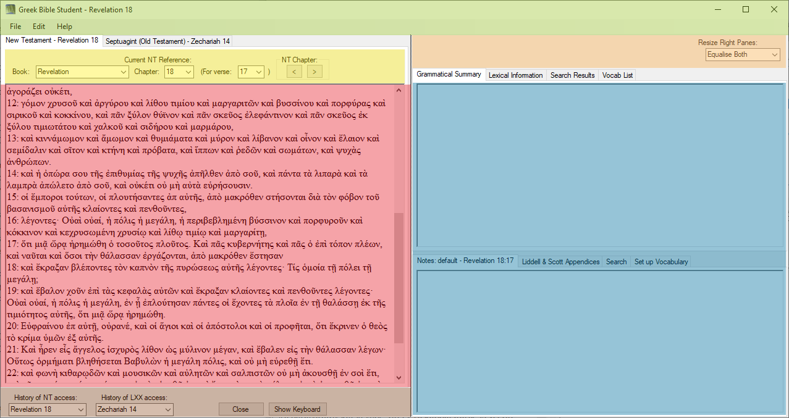
The rest of the application window is divided into two areas, left and right. We have identified three sub-areas on the left:
The right area is again divided into parts, although the top area (marked as a light brown panel) doesn't do much. The blue area is really two additional panels with a variety of sub-sections that are mainly to do with presenting information that you ask for as you work on the text.
Note also that the left side really has two distinct tabs (left uncoloured): one for the New Testament and the other for the Septuagint (LXX). The basic structure shown here is the same for both.
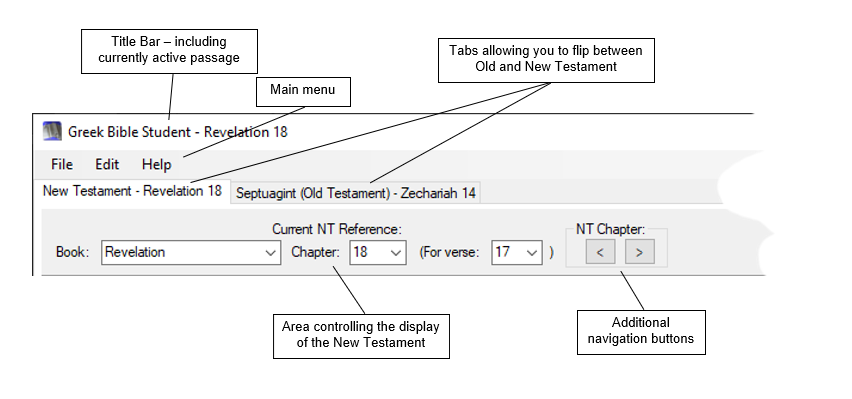
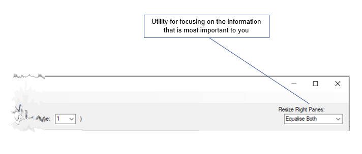
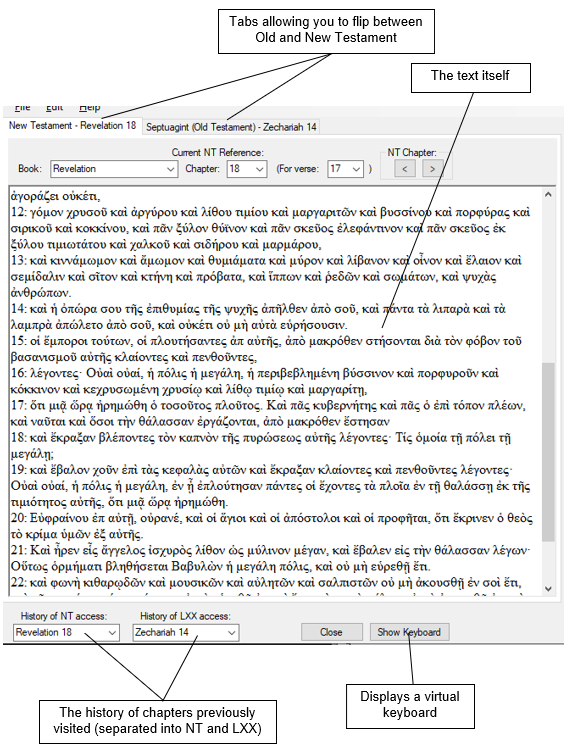
| 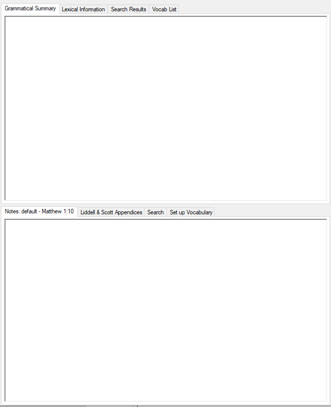 |
The upper half of the pane contains a variety of panels that will provide the user with information. We will discuss each of these in more detail below. The bottom half contains a variety of utilities:
|
It's pretty obvious what happens here.
The New Testament (NT) text and the Septuagint (LXX) text are kept separate and are accessed through separate controls. So, to read the NT text, click on the first tab at the top of the text pane and to read the LXX text click on the second:
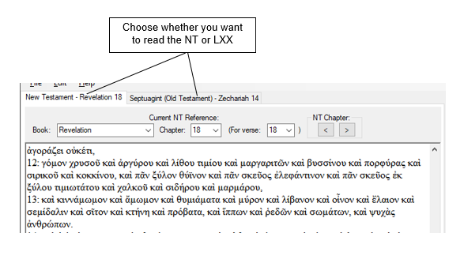
If you are reading the NT, you can change the book you are reading by selecting from the list in the Book list, in the Orientation Panel. Similarly, you can change the chapter by selecting from the Chapter list. Note that, if you change the book, it will automatically reset to the first chapter of that book.
If you want to do the same for the LXX, you need to select the second tab - Septuagint (Old Testament) - and you will be presented with a very similar setup.
In both cases, you can also select a specific verse from the relevant pull-down list but there will be no visible change. (We will talk about the purpose of the list of verses later.)
If you have a note displayed for your current verse and you change this verse reference, that note will disappear from view. (Don't worry! It will be conserved.) Similarly, if the verse you change to already has a note, then this note will now be displayed. We'll talk about notes later.
If you right click anywhere on the text area, a small menu will pop up:

This gives you a number of options.
This will do what the image tells you.
If you select Memory, this will copy the currently selected word into memory. This means that you can paste it into another application, such as a Word Processor. (If you're not sure how to paste into your application, check its help facility, look on Google or ask a friend.) Note that you can choose the copy with or without the reference - i.e. with the book name, chapter and verse.
If you select Notes, it will copy the word to the notes area for the current verse. As with copying to memory, you can choose to make the copy with or without a reference.
When you right click to get the Context Menu, make sure that the mouse is over the specific result and word that you are interested in.
This operates in exactly the same way except that it will copy the whole verse rather than a specific word. Again, be careful that you position the mouse correctly.
Predictably, this does the same thing but for the whole chapter. This time, the position of the mouse is relatively unimportant.
You can select a small amount of text by using a click and drag technique: click the left mouse of the button, as normal, at the place where you want to selection to start but hold the button down rather than letting go; then, while holding the button down, drag the mouse until it is over the place where you want the selection to finish; then let go. Once you have done this, you can right click anywhere in the text area and select the menu option to copy the selected text.
Note that, in this case, you will not be offered the option to include a Bible reference.
Normally, with any text, you can select a word using a double click - i.e. if you click the left mouse button twice in succession, the entire word can be highlighted. This action can even be extended to multiple words by doing the "double click", holding the button down after the second click and then dragging the mouse across the text you want to select. Unfortunately, we haven't been able to make this work correctly in GBS: for some reason, the Unicode script used for the Greek text wrongly reports the length of words and, occasionally, Windows thinks the word is longer than it is. This means, when you select a word by double clicking, it can highlight the beginning of the next word as well.
As a result, we counsel you to avoid attempting to make a selection using double clicks. If you do use the double click method, watch out for errors in the extent of the selection.
See section 6 below for more information on this option.
See section 4 below for more about this.
This is a convenient diescription for the action of creating:
If you right click on a word in the text area, you will see a small context menu pop up:
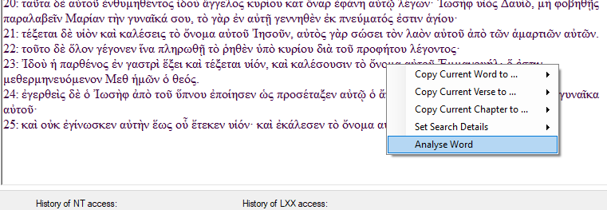
Then select Analyse Word from the resulting pop-up menu to obtain parsing details and lexical information for that word. You will see the parsing information on the right hand, top pane immediately:
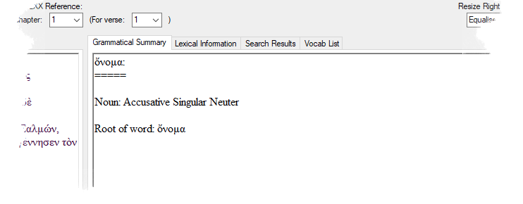
To see the dictionary definition, click on the Lexical Information tab:
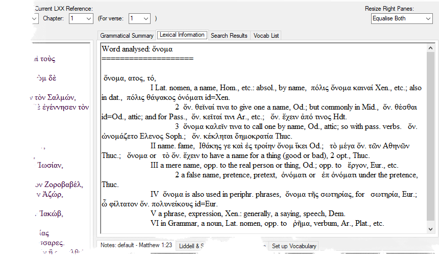
The process of finding the word in the Liddell & Scott lexicon is a little insecure so it's possible that you will get a message that makes it clear that the word could not be located. We apologise, if this occurs: it simply illustrates that, although the tool is useful, it does not replace the need for a decent commercial lexicon. You also need to be aware that the version of the lexicon used is a little old and does not reflect contemporary scholarship.
Note: if you select multiple words, Greek Bible Student will provide a warning and will not be able to display the information.
Note that parse details and lexical information will remain available until you request a new analysis and that changing tabs does not erase data.
Greek Bible Student keeps a track of passages you have selected. If you want to return to a previous Book and Chapter, simply click on the little down arrow of the relevant History Combo Box:
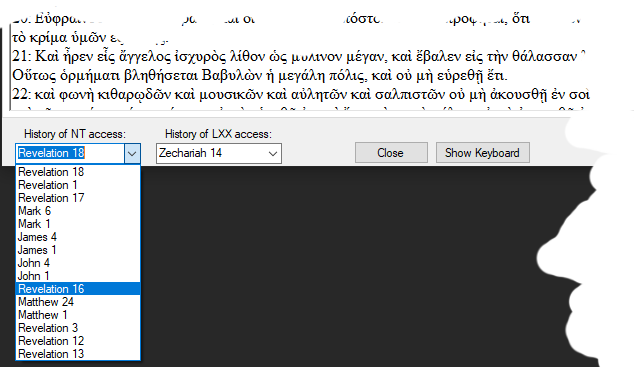
Then select the previously-used passage that you want. Obviously, if you want to reuse a LXX passage, you will need to select it from the History of LXXX access list.
Although not strictlly history, you can also select the previous chapter
by clicking on the left arrow as:  in the top, orientation bar, or the next
chapter by clicking on the right arrow. (Of course, if you are currently
referencing a LXX passage, the title will say LXX Chapter.)
in the top, orientation bar, or the next
chapter by clicking on the right arrow. (Of course, if you are currently
referencing a LXX passage, the title will say LXX Chapter.)
Note that the bottom right pane also includes a tab for Liddell & Scott Appendices. If you click on this, you will see a series of tabs on the bottom of the pane as well. Each of these will display information found in the original lexicon. There is no intelligence in these pages but they are they so that you can check abbreviations and the like that you might find in the Lexical Information.
If you click on the Search tab in the lower right pane, you will find a fairly busy pane which allows you to configure a search:
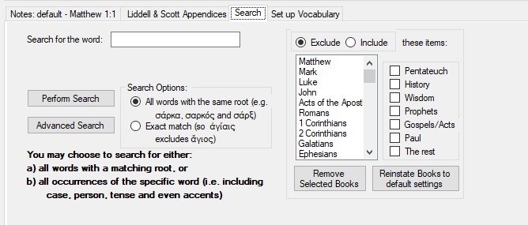
This will take quite a bit of unpacking and some time to get used to, but it is to be hoped that this will be a useful part of GBS.
Obviously, the word to search for must be entered into the first textbox: Search for the word. The question is: How do you type a Greek word into the box?
Probably the most useful mechanism requires a return to the text area. If you right click on a word in the text area, a context menu option allows you to copy that word into this box:
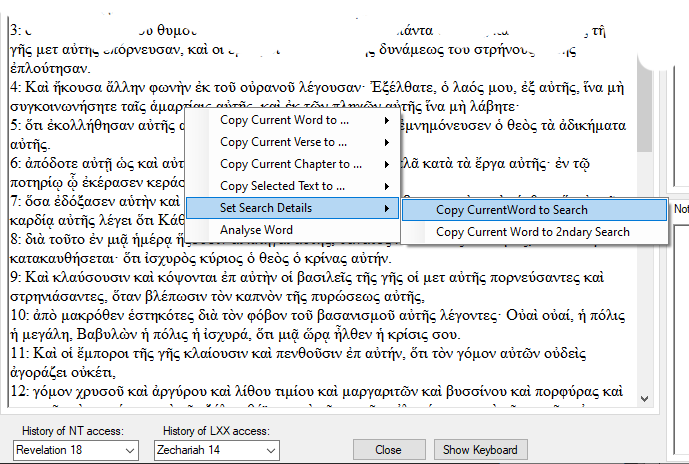
If you select this menu option it will insert the selected word into the box. (You can't see it here but the word ????????? was selected.) So, with the word in the textbox, simply click on the Perform Search button and GBS will look for all the occurrences in the NT and the LXX:
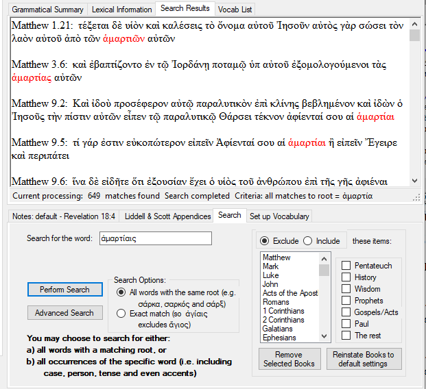
Notice the scroll bar to the right of the search results. This means that you can click on the light grey area below the "thumb" and scroll down a page for more results. Alternatively, you can "drag" the darker grey thumb (the small square) and drag down as much or as little as you want.
Notice also the message at the bottom of the results. This was created while it was performing the search and is a report on progress. Be patient: the application is scanning through a lot of text and can take a little while.
You can speed up the search if you exclude some books from the search criteria. This can be done in a number of ways:
a) Specific books
If you click on one of the books in the listbox, it will be highlighted (or "selected"). If you click on a second book, that too will be selected and the first one will stay highlighted. You can scroll through the list of books and select specific ones:
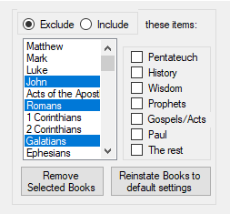
If we now click on the Remove Selected Books, GBS will remove those books from the search criteria:
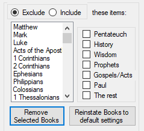
Look carefully and you will see that the three selected books are no longer in the list. Incidentally, if you clicked on a book in error and it was selected, simply click on it again and it will be un-selected,
If I want to exclude whole groups of books, I can use the check boxes to the right of the book list. Imagine, for example, that I don't want to search the gospels or Acvts. Then, I can simply click on the checkbox, Gospels/Acts and they will disappear from the list:
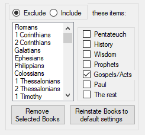
Of course, with a few judicious clicks I can restrict the search to the LXX alone:
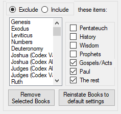
You may have noticed the two buttons above the book list: one says Exclude and the other says Include. These are "radio buttons": clicking on one un-clicks the other; they are an either/or choice. If you click on the checkboces again to remove the ticks then click Reinstate Books to default settings, all the books will reappear. Selecting Include will now, paradoxically, empty the book list. Clicking on the same three groups will then add the NT books to the list:
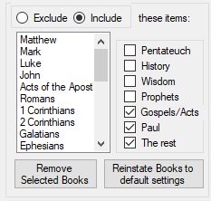
So, using these simple selection tools, you can quickly and easily narrow your search criteria.
To the left of the book list is an option that we have ignored up to now: All words with the same root. We have been searching all words with the same root. This will not search for both verbs and cognate nouns but will search for all variations of conjugations of a verb or declinations of a noun or adjective. If you really only want occurrences of exactly the word you entered in the Search box, then click on the radio button, Exact match:
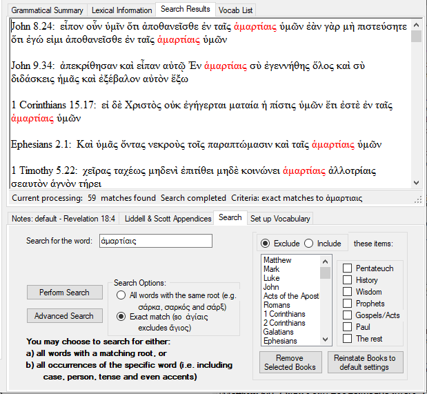
Compare the results here with those shown earlier. At first they look the same but, as you scan down, you will see that some are missing. These latest results show only the verses that show specifically ?????????.
In general, I have found the method described above as the most common method by far. However, there is a second way. If you look on the bottom left of the application window, you will see the button: Show Keyboard:
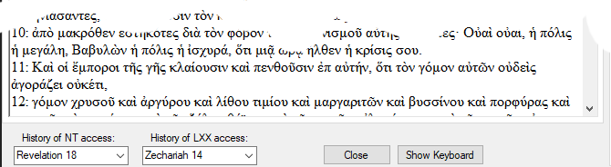
Click on this button and a virtual keyboard will be revealed:
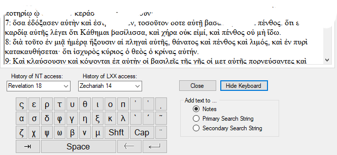
The radio buttons on the right will determine where any word you type will go. The main benefit of this keyboard is that you can easily enter Greek text into your notes. However, you can also use this to populate your search option by selecting the Primary Search String radio button option. Now, when you type, the characters will be entered in the Search textbox.
Of course, you "type" using the mouse. These do not respond to keyboard presses. To get the accents, breathings iota subscript and the like, click on the relevant symbol first, then on the character that will bear it. If the addition is not allowed, it will simply be ignored.
You may need to experiment with this option a little. You will also need to be careful that you have typed the word exactly.
No doubt the hawk-eyed user has already noted several references to Secondary Searches and Secondary Search Strings. You can either redirect a second typed word by selecting the Secondary Search String radio button option on the virtual keyboard, or you can use another search option when you right click on a selected word in the text:
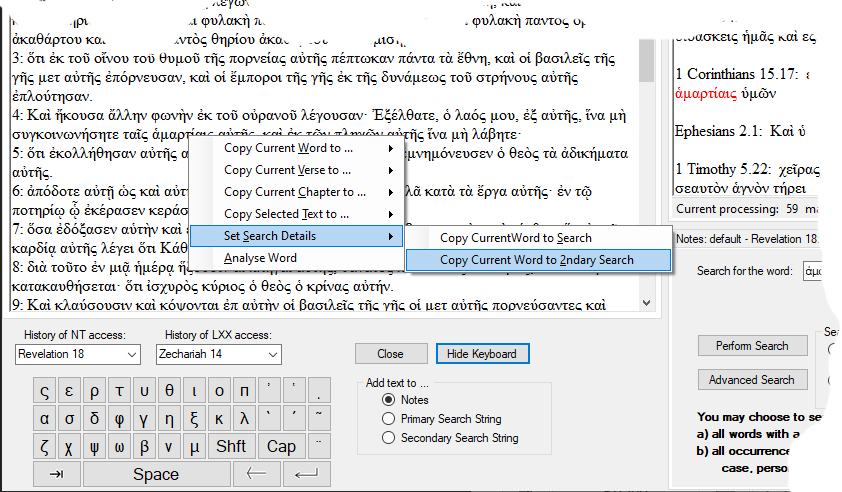
This will then modify the search area:
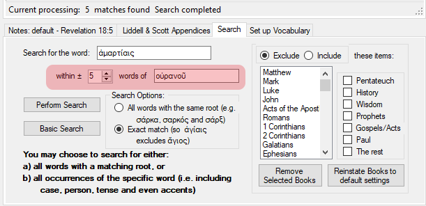
When you click on Perform Search you will now search for all occurrences of the primary word that occur within n words of the secondary word:
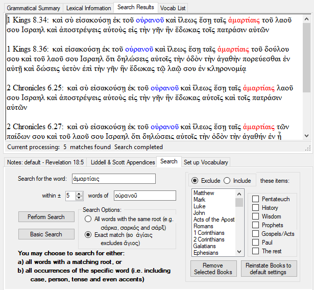
You will need to be very patient when using this option: the search process is a lot more complex and can take quite some time.
You can vary the strictness or slackness of criteria by varying the "distance" of the two words, up to a separation of 10 words. It will be for you to judge how far the two words can be apart before there mutual occurrence becomes coincidental rather than significant.
Note also that this search can return matches across two or even three verses. (In fact, in extreme, it could be up to 5 (very short) verses. This explains why some results will look a bit ungainly and have two verses without a break between them. All the other utilities (root v exact; excluding or including books or groups of books) work in the same way.
These search results are primarily for your information. They form a kind of concordance. However, you can also make use of them. Right click on any specific result and you will see the following Context Menu:
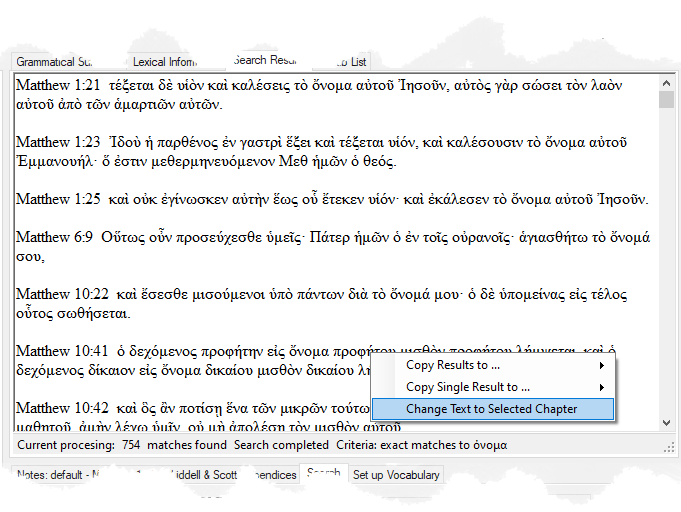
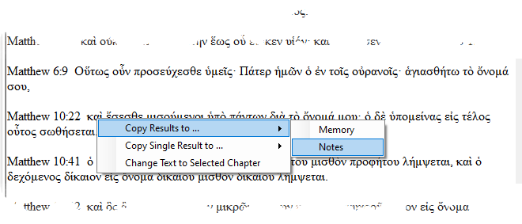
You will see that this will allow you to copy all the search results to either memory or to the currently active notes area.
If you copy this information to memory, you will then be able to paste it into another application, such as a Word Processor. You will use your normal paste mechanism. (If you're not sure how to use paste, check it out on Google or take advice.)
Remember that, if you copy it to the notes area, it will be active in the note for the currently selected verse.
This looks and acts pretty much the same except that it is selective: it will only copy the entry that you clicked on. This means that you will need to be careful where you right click.
Again, you need to be careful where you click for this option. It will change the book and chapter in the left (Text) pane to that of the result. So, for example, if you select this option on the result for Matthew 6:9, it will change the text presented in the left pane to Matthew 6. Note: if the New Testament is currently displayed and you click on a LXX result, the LXX pane will be changed but will not automatically be visible. The same is true the other way round.
GBS allows you to create vocab lists for a specific chapter or verse. To do this, click on the Set up Vocabulary tab in the bottom half of the right hand pane:
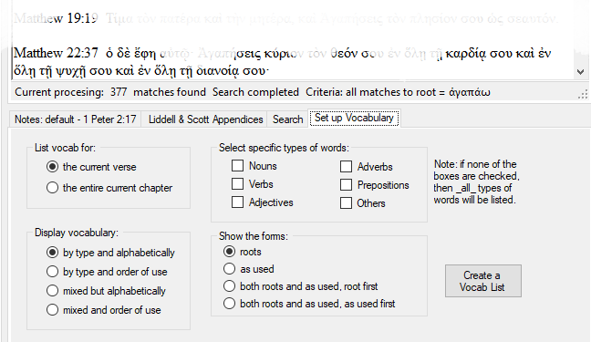
You can set up various options much as described for the Search facility.
You can create a vocab list for either a single verse (the current verse) or for the whole chapter (the entire current chapter). If you opt for the verse, make sure that the verse you are interested in is correctly set in the correct pull-down list in the Orientation Panel at the top of the window. For both options, make sure that the correct text is active (NT or LXX).
This is not an either/or choice: you can check or uncheck as many grammatical categories as you want. So, for example, if you are only interested in Nouns, make sure that there is a tick in the Nouns box and all others are left blank. As another example, if you want both adjectives and adverbs but nothing else, then ensure that the two boxes, Adjectives and Adverbs are ticked and nothing else.
As the note beside the check boxes says, if you leave everything blank, then all words will be listed.
This is probably best described by showing you examples.
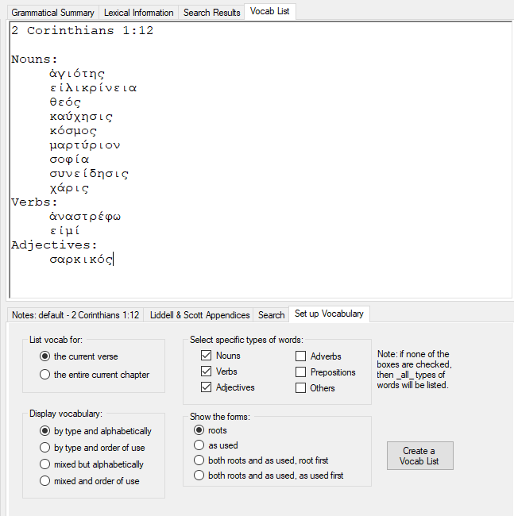
Note that we have limited the choice to a single verse and just nouns, verbs and adjectives. The same option for the entire chapter would provide a fuller list:
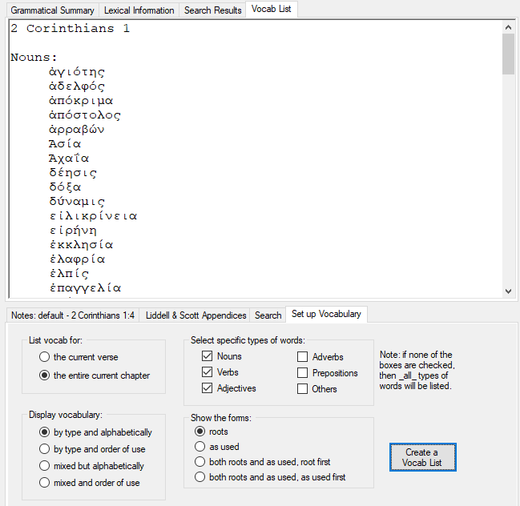
Obviously, there was too much to show everything and we can only see the first page's-worth. (We have used a different passage - 2 Corinthians 1 - because there are too many personal names in Matthew 1.)
See, the list is seperated into one list for nouns, another for verbs and so on. Within each category, they are listed alphabetically.
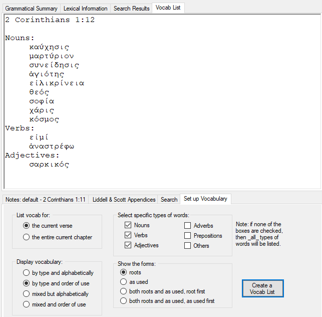
Compare this with the first image in the previous sub-section. It looks almost the same but the order of words is different. In this case, they are presented in the sequence in which they occur.
You can create similar lists for:
You can also choose (from the last set of options) whether to list the actual words used in the verse or chapter involved, or to use their roots. All previous examples have shown roots but here we show the specific words used in the verse:
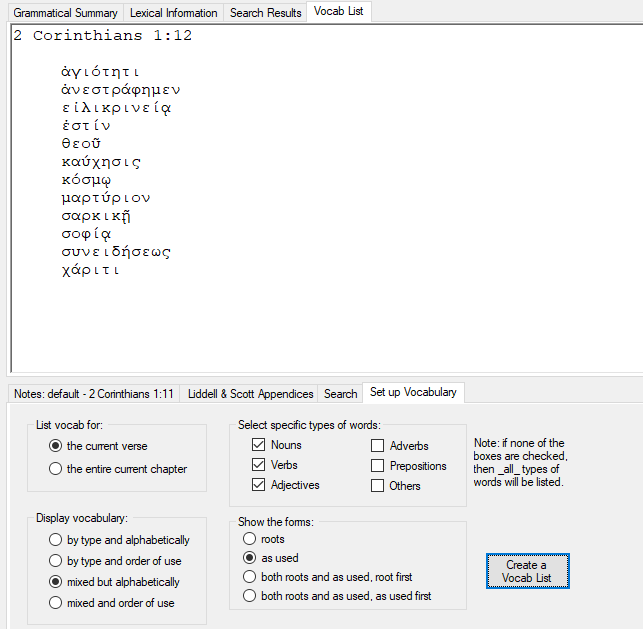
Both can be shown and you can choose which will control any alphabetical ordering that takes place:
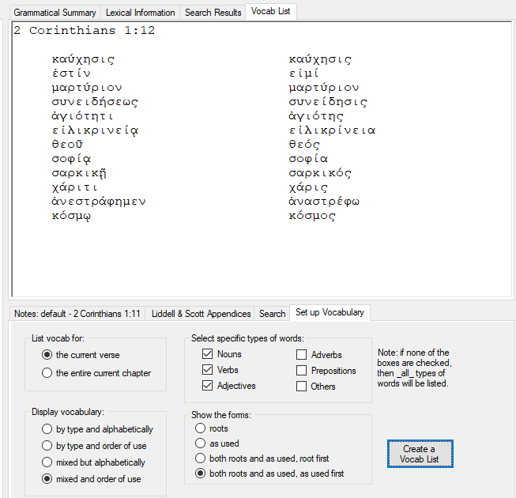
Hopefully, the difference is now obvious.
Note that we have used a monospace font for this display (Courier New) so that the two lists align neatly.
This is the first tab in the area at the bottom right of the window:
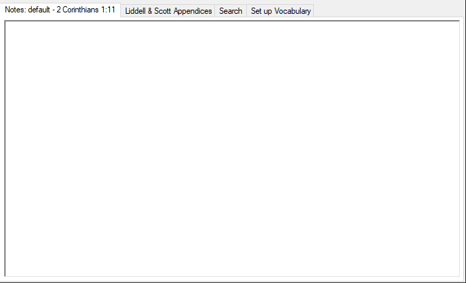
This is an area where you can simply make notes about a given verse. Each verse has its own notes area and, when you change to a different verse (whether in the same chapter or elsewhere), the note will disappear and, if the new destination already has a note, the new note will appear. So, if you change something and the note disappears, don't be too worried: moving back to the original verse should restore the note as well.
We will learn more about notes in section 9.2 below.
The main menu is found at the top of the application window, in the Orientation Panel:
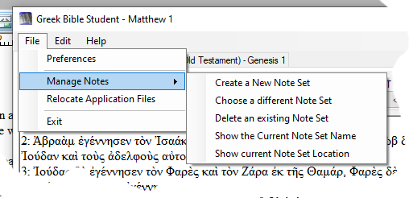
Clicking on this option will open a new mini-window (known as a dialog - note American spelling):
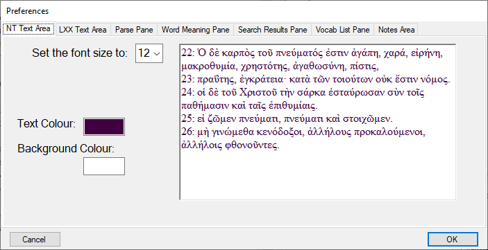
Each tab along the top of this dialog represents one of the areas in which text occurs: the two panes of biblical text (NT and LXX), the analysis panes, the search results, the vocab lists and the notes area. Clicking on each tab will result in a presentation that is almost the same:
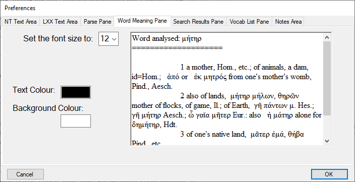
For each area, this dialog allows you to:
This might seem a little unnecessary but some people find black-on-white uncomfortable and changing colours may make it easy to use the application for long periods of time. (There is some suggestion that symptoms of dyslexia are eased when changing colours.) As a person of more mature years, the ability to increase text size also has significant benefits. Add to this that having different background colours may help distinguish the different areas and the feature could prove quite useful.
This is just a matter of pulling down the Set the font size to list and selecting a larger or smaller font size:
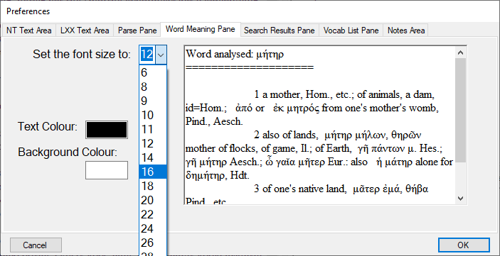
Once you have made your selection, the changes will be visible in the example text area on the right:
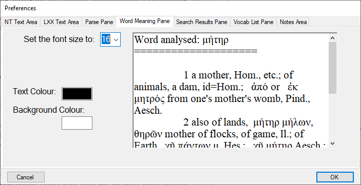
(Compare this image with the previous one.) Note that, although you have changed the font size for the lexical information area, you haven't changed the other areas. You could have a font size of 16 for the lexicon text, 14 for search results and 12 for everything else. Note also that you haven't actually changed anything until you click on the OK button.
When you click on the small black recangle of the Text Colour a colour picker dialog opens:
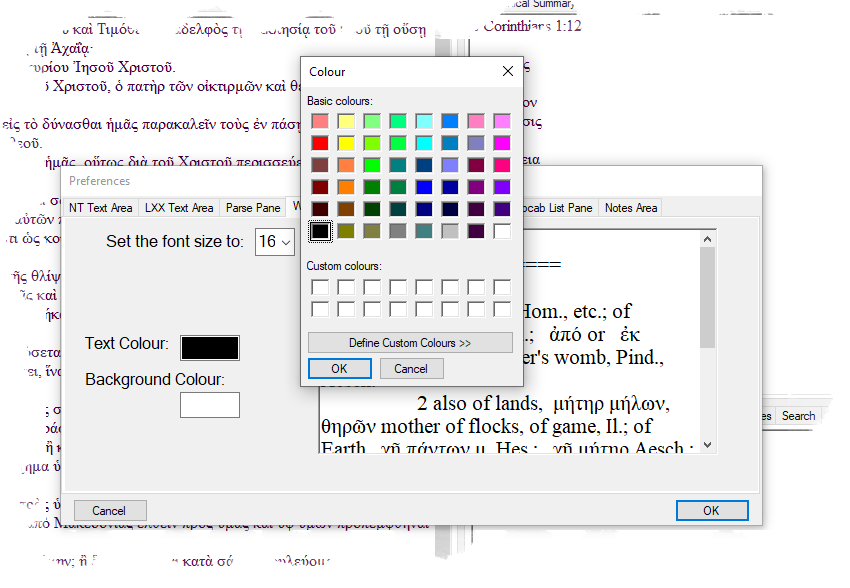
From that point onwards, it should be obvious what you need to do. There are various levels of complexity to the colour picker and it is recommended that you experiment with it - but you can simply use the preset colours:
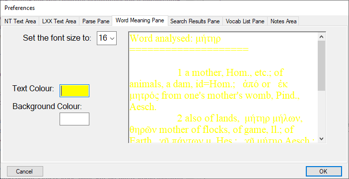
Note that the preferences for the Search area add two additional colours:
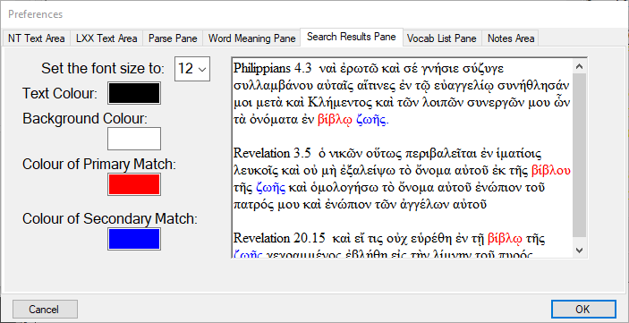
These mark the primary and, for more complex searches, secondary words in each matched quotation. You can change the colours for these in the same way as before.
Wow! That looks awful! But let's change the background to red:
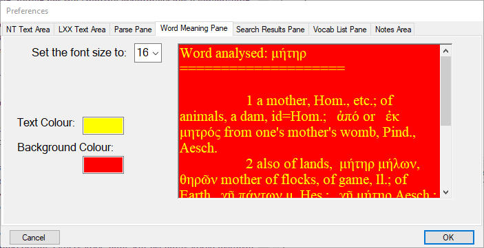
That's not so bad, now ... although it's all a matter of taste.
You can change some or all of the areas in a single session. If you are uncomfortable with your changes, simply click on Cancel and no changes will be made. Once you have changed the areas to your satisfaction, click OK and the changes will be activated. To show its effects, look at the changes we have made to the lexical information area but to no other panes:
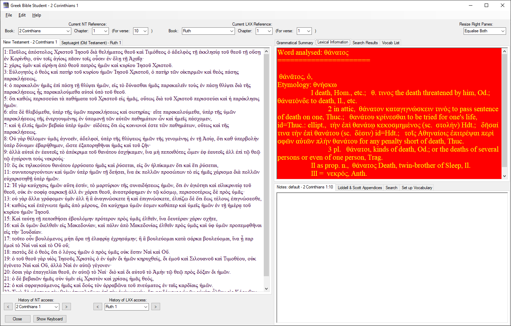
We've talked about the notes but we need to look at additional facilities that are provided in managing notes.
Each verse can have a note attached to it. We collect all the notes together to form a Note Set. GBS allows you to have more than one Note Set but you can only have one Note Set active at any one time.
Out of the box, GNS comes with a single Note Set called default. Additional menu options under the Manage Notes option allows you modify your use of notes:
Selecting this option will open a dialog to allow you to create a new Note Set:
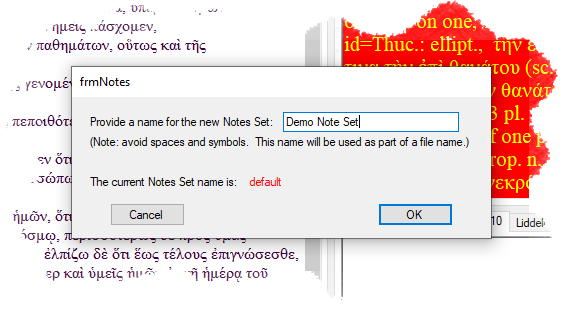
You'll see that I've given the new Note Set a name. All I now have to do is OK it.
This not only creates the new Note Set but changes the currently active Set to this new one. You can check this out by looking at the tab in the bottom right area of the application:
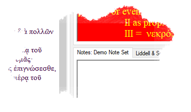
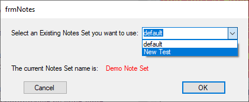
The currently active Note Set is lower down the dialog, in red. The listbox gives you a list of all other Note Sets that are available. (Notice that we have created an additional one called New Test.) Select the one you want and click OK and your Note Set will be changed.
This is a logical complement to the other tasks and functions pretty much as you'd expect:
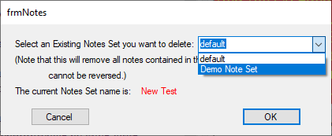
Note that the current Note Set is not included in the list that can be deleted. If you want to delete the current set, you must change to another Set first. The logical consequence of this is that you must always have at least one Note Set within GBS. (If you are enterprising and manage to delete all note sets outside the application, GBS will create a new, empty Note Set called default next time you run the application.
Beware: deleting the note set will destroy any data you have created within that set.
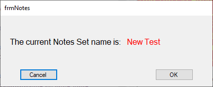
This is a courtesy feature.
This will present a message box telling you where the current Notes Set is stored on disk. This is useful if you want to:
It will also indicate the file structure of the notes, allowing you to add a new note that you have received from a different source. All notes data can be accessed simply using a file manager but be careful about any changes you make.
This path will also be copied into memory. This means that you can simply paste your destination intoa file manager.
All these actions require some knowledge of how to use a file manager.
The application depends on a number of files. These include:
By default, these are stored in an obscure user area. You may want to move them to somewhere more accessible for any one of a variety of reasons:
This option allows you to make that relocation.
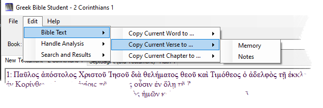
All options in the Edit menu option can be found in relevant Context Menus and have been discussed previously, so we won't go over them again here. This simply means that you have an alternative location for some functions.
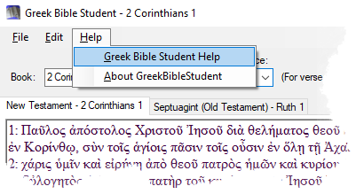
The first option, is this help document, so I guess you found it.
The second option provides information about the application:
If you need to contact us about any problems, check the version number here and include it in any correspondence.
You can resize the window by dragging the window edges or corners in any desired direction. We will assume that you are familiar with resizing windows (and click-and-drag actions, in particular) and, if you are not, we recommend that you read a book on using your operating system:

The advantages of making the window bigger are:
The advantages of a smaller window may be:
What is important about the resizing of your window is that GBS will remember your settings and return the window to the same size next time you use the program.
The window is divided into two halves and, between the main text area and the collection of small panes on the right hand side, there is a Splitter Bar. Slowly move your mouse from the main text area across to the right and, as you cross the divider, the cursor shape should change. At the point the curser has changed you can click and drag the bar with your mouse. The benefit of this change is that you can maximise the area in which you have main interest.
The application will remember the relative sizes of the two halves of the window as well when you return to the application.
The one control on the top tool bar that we haven't discussed is the pull-down list on the extreme right:
The purpose of this feature is to enable you to easily manage the information in the various sections on the right-hand side of the application. Sometimes you may want to concentrate on information in the top panel (e.g. Search Results) and at other times you may want to focus on the lower panel (e.g. if creating a complex note). This feature will enable you to resize these sub-panels in a controlled fashion.
The options availabel are:
In other words, reduce the bottom panel to an absolute minimum and allow you to focus on the top panel. To use this option, simply click on the down arrow beside the Resize control and select the Minimise Bottom option:
This has a similar effect but works in the other direction.
This will restore the dividing bar between the two sub-panels to the mid-point vertically. This means that both the top and bottom panel on the right hand side will be roughly the same size.
You are still able to resize these panels manually by clicking on the Splitter Bar and dragging it into the desired position:
The text of the NT used in this application seems to be based on the transliterated version developped by CCAT (the Center for Computer Analysis of Texts) and is (or, at least, was) part of the University of Pennsylvania. This seems to have been developed by the Society of Biblical Literature, Atlanta, Georgia (with links to Logos Software) and additional thanks go to James Tauber who has made many corrections to the original parsing of the Gk NT. It has to be said that the nature of computer analysis of the NT text has become quite extensive and it's difficult to be sure that adequate acknowledgements have been made, so this includes an apology if we have failed to give adequate credit where credit is due.
The text seems to be essentially that of Westcott and Hort (although, don't hold us to that) and this means that the text, as displayed, will vary from the latest versions produced by the United Bible Society (and the current version [version 28] is certainly recommended). In other words, this does not replace the need for a decent printed version of the Greek text.
The version of the LXX used also seems to have originated from CCAT (which, in turn, is based on the Rahlfs text) but some modifications were facilitated from a member of a Classical Greek forum and, sadly, we did not note his name or details at the time and are unable to make adequate acknowledgements. It is with sorrow that we admit this.
Because the path to the final versions of both NT and LXX have been long and convoluted, there is every probability that the data contains errors. We apologise for this and counsel caution in using the application: where conclusions are significant, check your facts carefully. But, then, you should do this anyway! Despite these words of caution, we think the benefits of using the software still outweigh the problems.
If you are encountering problems or would like a modification to the application, please feel free to contact me at:

(I've put the email in image form in the hope of minimising spam emails.)
Make sure you include your Operating System (including version) and the version of Greek Bible Student you are using. If the problem is technical, include as much information as you think we will need. I can't promise to resolve your problem, but I will do my best.